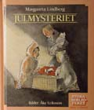
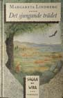
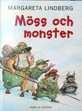

1988
Oskar
i paradiset
1989
Julmysteriet

1991
Ellen Milda
och Pavarotti
1994
Det sjungande
trädet

1998
Bronssvärdet
2000
Möss och monster

2002
Bröderna Muzart

2004
Oskar
i paradiset

2004
Dubbeltriss
i paradiset
|
1988 Oskar i paradiset |
 1989 Julmysteriet |
1991 Ellen Milda och Pavarotti |
 1994 Det sjungande trädet |
1998 Bronssvärdet |
|
 2000 Möss och monster |
2002 Bröderna Muzart |
2004 Oskar i paradiset |
2004 Dubbeltriss i paradiset |
! KÖP BÖCKER DIREKT AV FÖRFATTAREN !
Oskar i paradiset
Läs 1:a kapitlet
Paradiset är nittiosju steg långt och sextiofem steg brett. Det vet Oskar. Han vet att sura Jansson sätter snorkråkor under fåtöljen. Han vet att fru Klevebratt är paniskt rädd för råttor, att gubben Frid inte är pirat och att fru Berggren har en död man och en två meter lång professor. Men vilken av grannarna som kallar sig Bo Treberg och skriver deckare - det vet inte Oskar. Men han tar reda på det. Oskar är nämligen en forskarnatur. Lämplig högläsningsbok från 7-12 år. Finns på bibliotek och "En bok för alla". Illustrationer: Åke Eriksson ISBN 91-1-885102-9. Utgiven av Norstedts år 1988. Illustrationer: Gunilla Kvarnström ISBN 91-29-66095-5. Utgiven av Rabén&Sjögren 2004. Översatt till: Danska, Tyska, Japanska, Estniska "Tecknaren är ny. Detta märks mest på den klatschiga omslagsbilden för annars finns det många likheter mellan Gunilla Kvarnströms illustrationer från 2004 och Åke Erikssons från 1988. Layouten har blivit mer spatiös. Första kapitlet har bytt rubrik från 'Oskar i Paradiset' till 'En sann forskare'. Annars är det mesta sig likt i den nya upplagan av Margareta Lindbergs debutbok. Och det var väl bra det! För berättelsen om Oskar , brorsorna Bill och Bull, sura Jansson och övriga som finns i och runt huset som kallas Paradiset, är något så ovanligt som en svensk bok för mellanåldrarna som är charmig och rolig utan att vara det minsta flåsig. Jag och många andra tioåringar stortrivs med vår jämnårige vän, forskaren Oskar, och hänger gärna med när han ordnar luslov, klarar av en beväpnad skurk med hjälp av en ruggig slaguggla eller antecknar sina listiga hypoteser i tanke-bankboken. En skål i mjölk för Oskar i Paradiset!". Lena Kjersén Edman BTJ-häftet 2004-08-25 "Oskar är en ivrig forskare, han vet att världen vimlar av mysterier som behöver lösas. Av sin morfar får han en 'tanke-bankbok', där han samlar sina idéer, funderingar och tänkbara lösningar på problem som han stöter på. Oskar och hans familj är nyinflyttade, men de lär snabbt känna sina grannar på Aspvägen. Oskar märker att några av grannarna bär på hemligheter och det är naturligtvis hans uppgift att avslöja dem. Språket i boken är bra, den passar utmärkt som högläsningsbok eftersom den innehåller flera svåra ord som kanske behöver förklaras. Personer och miljöer beskrivs på ett levande och humoristiskt sätt. Gunilla Kvarnströms teckningar är detaljerade och roliga. Det är en bra bok för barn under de första skolåren." Marianne Eriksson BTJ-häftet 2004-08-25 |
Julmysteriet"Vad hade hänt i garaget under julnatten? Genom vindens vinande hörde Bill ett ljud. Ett svagt ljud. Helt nära. Han höll andan. Så tog han ett steg mot garageporten... och ett till... och ett till..." Högläsningsbok från 6-9 år eller att läsa själv . Finns på biblioteket. Går inte längre att köpa. Illustrationer: Åke Eriksson ISBN 91-20-07598-7. Utgiven av AWE/Gebers, inbunden 1989. ISBN 91-21-10151-5. Utgiven av A&W Läromedel, häftad 1989. |
Dubbeltriss i Paradiset
Läs 1:a kapitlet
Ännu ett forskningsuppdrag för Oskar ! Hur ska han göra för att hitta ägaren till ett viktigt brev som saknar både avsändare och brevskrivare ? Oskar går systematiskt till väga, samlar ledtrådar och hypoteser i sin tanke-bankbok... En uppmärksam läsare kanske också kommer på lösningen! Lämplig högläsningsbok från 7-12 år. Illustrationer: Gunilla Kvarnström ISBN 91-29-66095-5. Rabén&Sjögren 2004. "Margareta Lindberg har tidigare skrivit Oskar i Paradiset(1988), och här kommer en fortsättning om Oskar, bröderna Bill, Bull och Bamse, föräldrarna och grannarna. Oskars vetgirighet och utforskariver gör att han hamnar i många dråpliga och besvärliga situationer. Men det är en kille som har en sympatisk framtoning och är mycket omtyckt av sin omgivning. Pojkarna hittar en trisslott med en vinst när de letar efter intressanta och användbara saker i en container för grovsopor. Oskar tar som sin uppgift att ta reda på vems lotten verkligen är. Det löser sig tack vare Oskars utmärkta forskartalang och lite tur. Språket är lättillgängligt med mycket dialog. Gunilla Kvarnströms humoristiska svartvita teckningar bidrar till att förhöja läsglädjen. Dubbeltriss i Paradiset är en bok för hela familjen, som också fungerar utmärkt för högläsning". Eva Andersson BTJ-häftet 2004-08-25 "Paradiset kallas huset där elvaårige Oskar bor med föräldrar och småsyskon. Det ligger i en förort och alla grannar på gatan känner varandra. Oskar är full av upptåg och forskariver. I hans försök att spåra ägaren till upphittad trisslott blir alla på gatan inblandade. Många personligheter finns längs Aspvägen, och de beskrivs med humor och värme. Även en djuraffär och dess ägare ingår i miljön. Boken rymmer många komiska situationer och roliga reflektioner. Humorn tilltalar såväl vuxna som barn, vilket gör att boken borde bli en populär högläsningsbok. Både inom familjen , förskolan och de lägsta klasserna i grundskolan inbjuder den till att skratta tillsammans. För den läsvane eleven i skolår 1-4 passar boken även för egenläsning. De relativt få illustrationerna förstärker stämningen i boken." Margareta Brengdahl BTJ-häftet 2004-08-25 |
Ellen Milda och Pavarotti
Läs 1:a kapitlet
|
Det sjungande trädet
Läs prologen
I södra Roslagen ligger Wira Bruk. Här hittade arkeologerna år 1991 en krukskärva från stenåldern. Som alla skärvor från det förflutna har den en saga att berätta. Margareta lindberg förmedlar den sagan till oss och väcker vår äldsta historia till liv på ett dramatiskt, men ändå trovärdigt sätt. Det sjungande trädet är en Grottbjörnens folk för slukaråldern, men med historisk förankring i vår egen fascinerande förhistoria." Svensk Bokhandel nr.3 1994. Lämplig för mycket läsvana barn från 11 år och för vuxna. Boken finns på bibliotek och kan beställas direkt från författaren Illustrationer: Petra Wadström ISBN 91-1-937392-9. Utgiven av Norstedts 1994. |
Bronssvärdet
Läs 1:a kapitlet
Kent Hägglund DN Bronsålderspojken Gadd vaknar efter en fest. Hans vän Gylle står böjd över honom. "Men förstår du inte vad du har gjort!" "Nä-ä", sa Gadd. "Du har dräpt din egen far! Olyckliga barn! Du har dräpt Gunno. Din egen Far!" Gadd minns ingenting. Vännerna kommer överens om att dölja vad som hänt. Men det finns ett vittne. Trälflickan Anim, som är förälskad i Gadd. Gadd tar upp jakten på henne. När Anim ser honom komma går hon honom till mötes. Lämplig för mycket läsvana barn från 11 år och vuxna. Boken finns på bibliotek. Illustrationer: Svenska hällristningar. Omslag: Svante Segelson. IBSN 91-29-64564-6. Utgiven av Rabén&Sjögren 1998. |
Möss och monster
Läs 1:a kapitlet
Dag Hedberg i Barn och Kultur Mössen under femmans klassrum i den idylliska Kullskolan får besök av de sorgliga resterna av ett vilsegånget lämmeltåg. De skulle nog ha haft en trevlig tid tillsammans om inte en liten djävul - greve Vlad der Muus - plötsligt stått i dörren.... Lämplig högläsningsbok från 7-10 år. Finns på bibliotek och i bokhandeln. Illustrationer: Kjell Midthun ISBN 91-29-64879-3. Utgiven av Rabén&Sjögren 2000. |
Bröderna Muzart
Läs 1:a kapitlet
Vlaad der Muus är fast besluten att hämnas på näbbmusen M efter det nederlag han led i föregående bok, Möss och monster. Han och lämmeln korpral Musketör klär ut sig till bröderna Muzart och beger sig till mössens värld för att sätta upp operan Trollflöjten och få tillfälle att hämnas på sin ärkefiende M. Margareta Lindbergs smådjurs och smådjävuls värld är en fantastisk konstruktion där det finns mycket att känna igen från vår egen värld och dessutom för oss vuxna många intressanta litterära associationer. Viktigast är dock att berättelsen i kombination med både humor och action också väcker viktiga funderingar kring vänskap, avundsjuka, egoism och kärlek. Och mest av allt är ett fantasifullt läsäventyr. Gunilla Wedding i Skånska Dagbladet Illustrationer: Eldbjørg Ribe Omslag: Kjell Midthun ISBN 91-29-65426-2. Utgiven av Rabén&Sjögren 2002. |